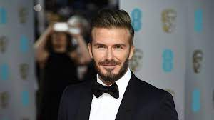

Jordan 1999. március 9-én, kedden született. Ezt követően Halak, és a Nyúl
évében született. 2020-tól 21 éves. Születési jele a Halak..
A nevadai Las Vegasban nőtt fel. hat fiatalabb testvére, négy testvére és két nővére van.
Jordan szintén két évig élt Costa Ricán. Később Los Angelesben telepedett le.

Michael Ward Jamaicában született, 1997. november 18-án. Három nővére van. Apja autóbalesetben életét vesztette, amikor két éves volt. A kedvenc sorozatomban szerepel, a Top Boy-ban.
Instagram
Adam Richard Sandler (Brooklyn, New York, 1966. szeptember 9. amerikai színész, humorista, forgatókönyvíró és filmproducer,Miután a Saturday Night Live című műsor szereplője lett, Sandler több hollywoodi játékfilmben feltűnt, melyek a mozikban összesen kétmilliárd dollár feletti bevételt termeltek. Ismertebb filmjei közé tartozik a Billy Madison – A dilidiák (1995), a Happy, a flúgos golfos (1996), A vizesnyolcas (1998), a Nászok ásza (1998) és A kismenő (2002). Sylvester Stallone után Sandler a második legtöbb Arany Málna díjjal, illetve jelöléssel bíró színész.
Instagram
Jacques Bermon Webster II, (1991. április 30.) művésznevén Travis
Scott (korábban Travi$ Scott), amerikai rapper, énekes, dalszerző és producer. Zenei stílusa
keveri a rappet, a hiphopot és a lo-fi-t. Művészneve nagybátyjának (Travis) és Kid Cudinak
(kinek valódi neve Scott Mescudi), első inspirációjának keresztnevéből született.
2012-ben Scott aláírta első szerződését az Epic Recordsszal. Ugyanazon év novemberében
leszerződött Kanye West GOOD Music kiadójához. Az első mixtape-je, az Owl Pharaoh 2013-ban
jelent meg. Ezt a Days Before Rodeo mixtape követte, majd az első stúdióalbuma, a Rodeo,
2015-ben. A második stúdióalbuma, a Birds in the Trap Sing McKnight (2016) első helyet ért
el a Billboard 200-on. 2017-ben kiadta a Huncho Jack, Jack Huncho albumot, Quavoval
közreműködésben, Huncho Jack név alatt.

Ryan Rodney Reynolds (Vancouver, Brit Columbia, 1976. október 23. –) kanadai-amerikai színész, humorista, filmproducer és forgatókönyvíró. Pályafutását a Hillside című kanadai szappanoperában kezdte 1991-ben, majd kisebb szerepeket követően a Két pasi meg egy csajszi című szituációs komédia főszerepét kapta meg, 1998 és 2001 között. Ezután feltűnt a Buliszerviz (2002), az Ezt jól kifőztük! (2005) és a Nász-ajánlat (2009) című filmvígjátékokban. Drámai szerepben is kipróbálta magát az Élve eltemetve (2010), a Hölgy aranyban (2015) és az Élet (2017) című művekben. Akciófilmes alakításai közé tartozik a Penge – Szentháromság (2004), a Zöld Lámpás (2011) és a Védhetetlen (2012). 2016-ban a címszereplőt játszotta a Deadpool című szuperhősfilmben. Az R-besorolású képregény-feldolgozás kritikai és pénzügyi téren is kiemelkedően teljesített, Reynolds színészi játékát egyéb díjak mellett Golden Globe-jelöléssel méltányolták. A Deadpool 2. (2018) című folytatásban ismét a szereplő bőrébe bújt. 2017-ben Reynolds saját csillagot kapott a Hollywoodi hírességek sétányán. 2012 óta Blake Lively színésznő férje, három gyermekük született.
Instagram
Scarlett Ingrid Johansson (Manhattan, 1984. november 22. Tony-,
BAFTA- és César-díjas, kétszeres Oscar-díjra és ötszörös Golden Globe-díjra jelölt dán
származású amerikai színésznő, énekesnő és modell.
Pályafutását A suttogó című 1998-as filmmel alapozta meg. Legismertebb szerepei közé
tartozik Natasha Romanoff/Fekete Özvegy megformálása a Marvel Studios
Bosszúállók-szuperhősfilmjeiben.
2008. május 20-án jelent meg első zenei albuma, „Anywhere I Lay My Head” címmel.